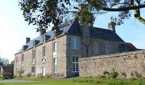
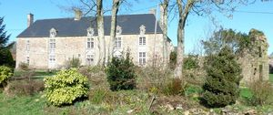
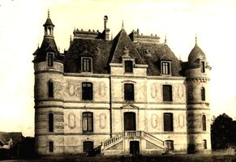
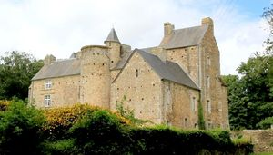
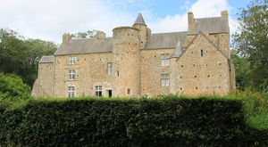
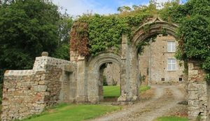

Recensement Jean-Claude Truffet
| Département | 50 — Manche |
| Canton | Bricquebec |
| Commune | Rauville la Place |
| Type d'édifice | Château |
| Période d'origine | XVI-XIX |






Trois châteaux dans cet article; Cour, Carreaux et Garnetot. GARNETOT, manoir de Garnetot du XVIe siècle, inscrit au titre des M.H. depuis le 5 décembre 1979. Ce manoir est caractéristique du Cotentin. Un château s'élevait au XIVe siècle, fortifié de 1327 à 1347 par Edouard III d'Angleterre. Il était occupé par la garnison anglaise de Saint-Sauveur-le-Vicomte. Jean de Vienne reprit la forteresse en 1374. Les dates de construction du manoir s'échelonnent du XVe au XVIIe siècle. Il a conservé un aspect défensif avec cinq tours et des douves. L'ensemble comprend un bâtiment principal dont toutes les ouvertures ont été percées au XVIe siècle. Au sud, une tour d'escalier flanquée d'une échauguette a perdu son couronnement. Au nord, deux tours plus modestes se dressent de part et d'autre du pont. Sur la façade principale, une porte du XVIIe siècle avec un fronton interrompu par un blason, donne accès au manoir. A l'est de ce bâtiment se dresse un pavillon carré. Sur ce pavillon s'appuie perpendiculairement, au nord, un bâtiment orné d'une tour d'escalier en façade. Au XVIIe siècle, sur la façade arrière à l'ouest, un pavillon fut ajouté, se rattachant au bâtiment principal par une tour à moitié engagée, et d'une aile en saillie du XVe siècle sous laquelle un passage voûté donne accès au pavillon. Éléments protégés MH : les façades et les toitures ; le porche d'entrée : inscription par arrêté du 5 décembre 1979.
COUR; manoir , siège de la seigneurie de Rauville au moins dès le XIIIe siècle, le manoir d'origine est remanié au XVIIe siècle. Il arbore une façade de style Louis XIII, avec des frontons triangulaires qui surmontent les fenêtres. C'est à la Cour que serait née la mère de Gilles de Gouberville.
CARREAUX: au Haut du Mont, haute demeure érigée dans le dernier quart du XIXe siècle en face d'un manoir du XVIe siècle. À l'origine, à la place du château du Mont-de-la-Place, il existe un manoir nommé « manoir des Carreaux », demeure de la famille Folliot des Carreaux. Il appartient à Jean Folliot de Fierville, avocat au Parlement, seigneur des Carreaux, puis à son fils, Jean Folliot de Fierville (1605-1649), conseiller au Parlement, substitut du procureur du Roi en lélection de Valognes et enfin à Jean-François Folliot (1632-1678), mort quelques mois après l'incendie de sa maison des Carreaux, en 1677, « où tous les titres et papiers de famille furent consumés ». Son fils Jean-Jacques Folliot de Fierville (1670-1743) fit construire lhôtel de la Grimonnière, rue de Wéléat à Valognes, entre 1720 et 1722. Inhumé dans léglise des Cordeliers à Valognes, il est le dernier à porter le titre de sieur des Carreaux. Les générations suivantes ne portent plus le titre de seigneur des Carreaux. Parmi les fils de Jean-Jacques, Jean-Thomas Folliot (1699-1756), écuyer et capitaine général des canonniers gardes-côtes de Portbail Carteret, est seigneur de Fierville-les-Mines, il est inhumé dans le chur de léglise. Il est le grand-père paternel de Charles Folliot de Fierville (1819-1881), personnalité militaire. En 1871, pratiquement deux siècles après la destruction du manoir des Carreaux, les demoiselles Élia et Clotilde Ferrand de la Conté font construire le château du Mont-de-la-Place.
Edouard III d'Angleterre famille Folliot des Carreaux.
"
Trois châteaux dans cet article; Cour grav-1-2, Carreaux grav-3 et Garnetot grav-4-5-6 à Rauville la Place. Rauville gps 49° 23' 18" nord, 1° 30' 17" ouest